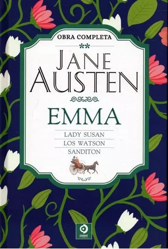
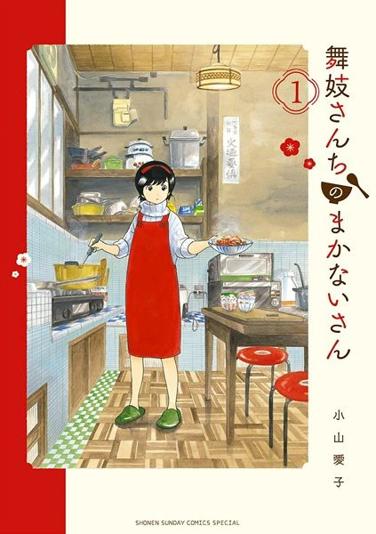
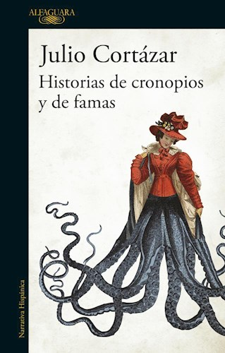
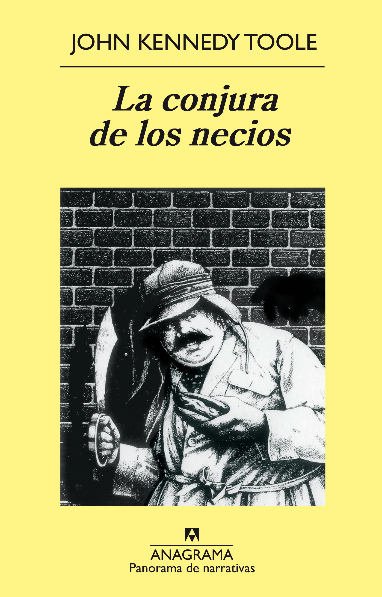
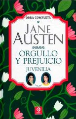

Home
Home Acerca de
Acerca de Libros Leídos
Libros Leídos Contacto
Contacto
Acerca de este site
Aquí vas a encontrar de todo sobre libros y literatura. Si sos apasionado por uno o ambas, estás invitado a recorrer y disfrutar este espacio hecho con pasión y amor por los libros. Pero te advierto: no he estudiado literatura en la facultad, solo he dedicado gran parte de mi vida a hojear libros, blocs y sites! Han sido mi compañía, mi consuelo, mi trampolín para imaginar y crear. ¡Eres más que bienvenido y bienvenida!
Libros leídos en 2023

Emma
Jane Austen

Maiko-san chi no Makanai-san
Aiko Koyama

Historias de cronopios y de famas
Julio Cortázar
Demon Slayer
Koyoharu Gotōge

La conjura de los necios
Jhon Kennedy Toole

Orgullo y prejuicio
Jane Austen